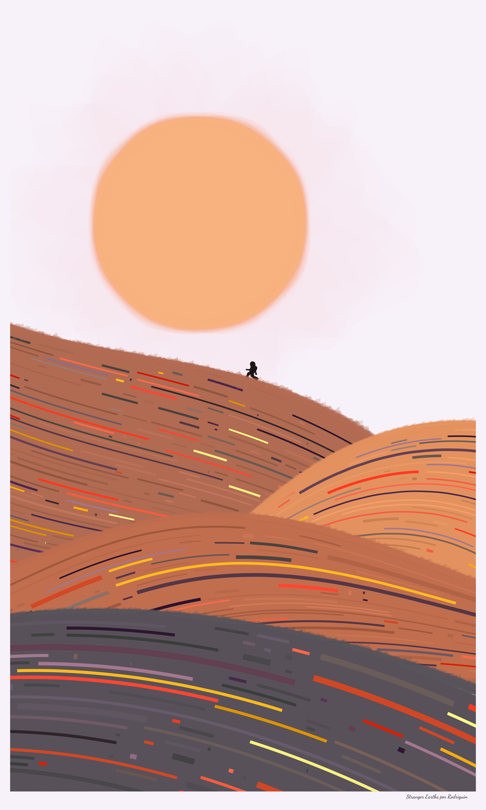
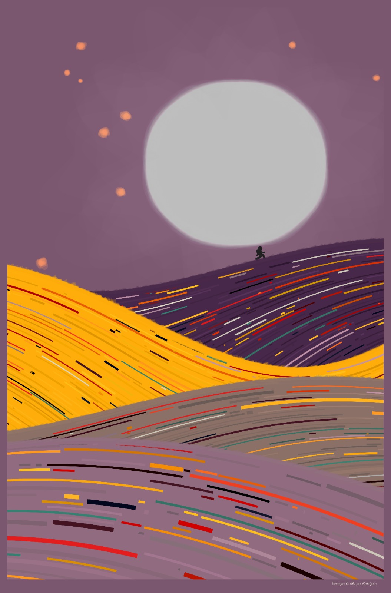
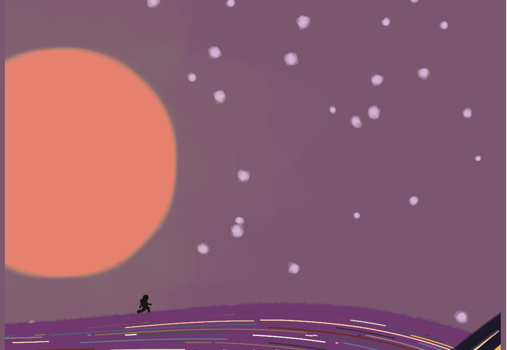
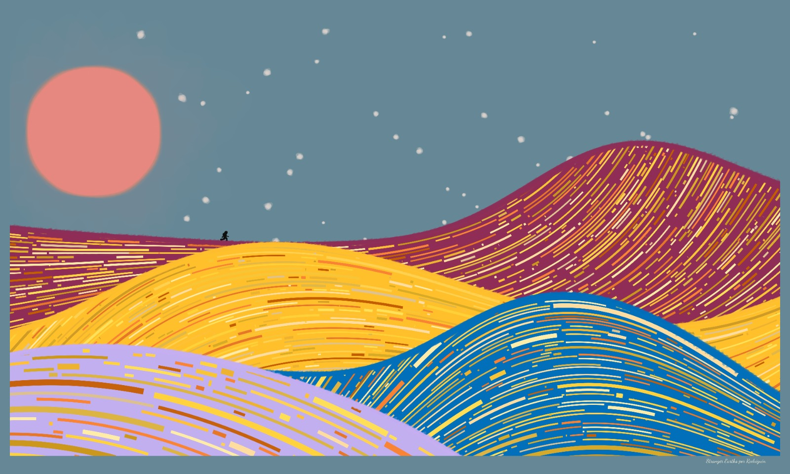

Stranger Earths

This is a algorithmic art project that transports viewers to surreal desertic landscapes reminiscent of the iconic Dune setting. This artwork combines technology and algorithms with human hand-drawing, creating a visual experience that wishes to blur the line between reality and imagination.At the heart of Stranger Earths lies a generative process known as flowfield layering. The algorithm crafts intricate patterns resembling rolling hills and majestic dunes. And the interplay of colors and textures in these flowfields attempts to give life to an otherworldly terrain, where the ground seems to ripple and shift with an ethereal energy.
Against this surreal backdrop stands the enigmatic silhouette of an astronaut, hand-drawn with a minimalistic style. The juxtaposition of the astronaut against the vast desert expanse evokes a sense of solitude and exploration. Isolated in the alien landscape, the astronaut becomes a symbolic figure navigating the unknown, a lone explorer in a realm that blurs the boundaries of reality and fiction.

The layering of flowfields not only creates the mesmerizing dunes but also contributes to the overall dynamism of the scene. As the viewer’s gaze moves across the artwork, the subtle variations in the flowfields give the impression of movement, trying to make the desert landscape feel alive and constantly evolving.
Stranger Earths invites viewers to contemplate the intersection of technology and art, as it merges algorithmic precision with the emotive power of hand-drawn elements. The fusion of these techniques results in a visually stunning and thought-provoking artwork that transports observers to an alien world, sparking their imagination and inviting them to ponder the mysteries of the cosmos.
Now let’s get a bit inside the algorithm.
Color
Color is in almost every part of the process. There are more than five parameters that control color, these are the main ones:

- Lines palette: sets the color palette for the lines in the dunes;
- Dunes palette: defines the color for the dunes;
- Color assignment: defines how the color of the lines will be assigned.
- Expand palette: whether to expand the selected palettes or not.
- Moon/Sun and stars palette: the palette for the elements in the sky.
Dunes
The form of the dunes are ruled by three parameters: number of folds, flow of the dunes and height of the dunes. The first one sets the number of dunes that will be drawn on the canvas. The second one defines the movement of the dunes, each dune can have its own algorithm to define its flow. Lastly, the third one controls how high the dunes can get.

Skies
The elements in the sky are drawn by layering blobs which are deformed by perlin noise. The height and size of the moon or sun are tunable parameters such as the number of stars.

The Explorer
The final touch of the artwork is given by the astronaut/explorer. This is a hand-drawn sketch converted to data points that form that mysterious silhouette in the farthest hill. The location and direction of the explorer are set randomly.